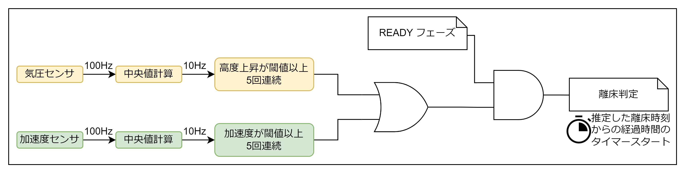
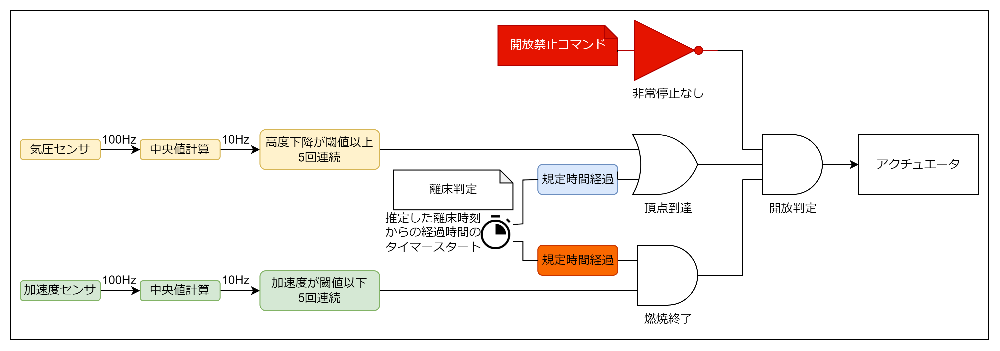

状態遷移
| フェーズ定義 | 概要 | 該当フェーズへの移行条件 |
| CHECK | 打上げ前の動作確認 | 起動時・移行コマンドの受信 |
| READY | 点火待機 | (キースイッチ・)移行コマンドの受信 |
| FLIGHT | 点火後 | 離床判定 |
| OPENED | 減速機構作動後 | 開放判定 |
離床判定

開放判定

使用方法
- Openerクラスを継承したクラス(
myOpener)の作成
- シミュレーション結果を反映して
protectedのパラメータを設定する．
open()，close()の関数を実装する．- ハードウェアで必要な初期化があれば
init()を実装し，その中でOPENER::init()を呼び出す．
- myOpenerインスタンスの利用
opener_100Hz()を100Hzで呼び出してセンサーデータを渡すと，自動的に判定が行われopen()が呼び出される．- 離床から開放までの時間のシム値に関しては，風向風速や射角に依存し直前にアップリンクする必要があるため
open_threshold_time_ms()で値を上書きできる．
- その他のコマンドについてはサンプルコードを参照．
Openerクラスのドキュメント
サンプルコード
https://github.com/core-rocket/Opener/blob/03a7ea9a9297b0590195f735b6251cbbd7a642fb/examples/simple_Opener/simple_Opener.ino#L1-L55
CORE CAN Protocolに対応したサンプルコードはexamples/CCP_Openerにあります．
パラメータの設定[WIP]
中身と変数名の対応表
| 目的 | 値 | 変数名 |
| 燃焼終了判定 | 燃焼時間 | meco_threshold_time_ms |
- 燃焼時間
- エンジンの作動時間と同じ値ではなく，マージンを加える
- 風向風速射角を変えた中で最短の頂点到達時間より短く設定する
搭載計器に対する要求[WIP]
- ハードウェアの設計
- 無人の小型ロケットであるため，センサー不具合は1つのみと想定している
- 故障の想定を参照し，センサー以外も故障の想定とリスク評価を行うこと
- ソフトウェア
- どちらかのセンサーが故障し通信が不可能になっても
opener_100Hz()を100Hzで呼び出すこと
- センサー共通
- 少なくとも10Hz以上のOutput Data Rateをもつこと
- 加速度センサー
- ランチャ上での重力加速度が正の値となる向きに取り付けること
- 気圧センサー
- 予想到達高度の気圧が測定可能なレンジに収まること
- 測定高度のばらつきが[]に収まること
- 無線機
- アップリンクはチェックサムなどの誤り検出ロジックを実装すること
実機での動作試験項目[WIP]
設計の根拠
状態遷移の設計
「頂点で開放し，地上やエンジンの燃焼中で**絶対に開放しない**こと」
判定の流れ
READYフェーズ移行 → 離床判定 → 開放判定
高度降下で頂点を検出するだけでは誤判定を防げないため，離床判定と頂点での開放判定の2つを用いる． いかなる理由で離床判定が誤作動した場合でも，地上やエンジンの燃焼中での開放を防ぐロジックとする． ランチャ立ち上げ後に離床判定を許可するため，無線のアップリンクによるREADYフェーズ移行を行う．
故障の想定
任意のセンサーが一つだけ故障した場合でも，絶対に危険なタイミングで開放せず，可能な限り冗長系により頂点で開放すること
- 測定精度やレンジによる不具合
- 瞬間的な外れ値
- 継続的な異常値の出力
- 通信途絶
センサーが完全に故障すると，直接繋がったマイコンがハングアップすることがある．これを想定する場合には，センサー用の判定用のマイコンを分離してUARTやCANなどのバスで接続することで通信途絶と同じ状態にするハードウェアでの対策が必要である．ただし，センサー故障によるハングアップと，バス故障やシステムの複雑化とのリスクを比べてハードウェアを設計するべきである．
使用できるセンサー・入力
- 加速度センサー(機軸方向の加速度)
- 離床判定・燃焼終了確認が可能
- 燃焼終了後は空気抵抗を除けば0Gであるため，頂点判定は不可能
- IMU(姿勢)
- 機体が横向きになることを検知して頂点判定に使用できなくはない
- 風に煽られて機体が倒れることがよくあるので，かなり不確実
- 気圧センサー(高度)
- 離床判定・頂点判定が可能
- 前の測定値と比べて高度差を計算して判定に使用するため，測定誤差に注意
- ピトー管(対気速度)
- 離床判定が可能
- ノーズに搭載する手間があり，全ロケットに搭載するわけではない
- GPS(高度)
- フライトピン
- 離床判定が可能
- チャタリング対策が必要
- 機体外部に出るのでオペレーションミスによる誤作動が起こりやすい
- (ダサい)
- 無線機
- テレメトリをダウンリンクしてセンサーの動作状態を確認できる
- フライト前にコマンドをアップリンクしてフェーズ以降を行う
- 離床後のコマンドは開放の緊急停止のみに使用し，通常時はアップリンクは行わない
センサーデータの処理
- 外れ値検出
- 外れ値の影響を完全に無くすため，平均値ではなく中央値を使って外れ値を弾く
- 高度→速度算出などの差分計算
- センサーの値は必ずふらつくので，単に値が大きくなった小さくなったという判定はせず，変化量が閾値より大きい，時間変化が一定以上である，などの判定方法を用いる
ロジックの組み方
基本的に，事故を防ぐ条件はAND，判定を逃すことを防ぐ条件はOR
冗長化と，それによるシステムの複雑化によるリスクとのバランスをとる
- 離床判定
- 離床判定が誤作動した場合でも危険なタイミングで開放しないためのロジックを開放判定側に組み込むため，離床判定は絶対に誤判定をしないよりも判定を逃さないという方針
- センサーの不具合は任意のセンサー1つという想定のため，加速度と気圧のみで十分とし，フライトピンやピトー管による判定はソフトウェアや動作検証が複雑になるため行わない．
- 判定を逃さないという方針から，加速度と気圧のORをとって離床判定を行う．
- 開放判定
- 燃焼中の開放を防ぐため，頂点到達だけでなく燃焼終了確認をしたうえで開放判定を行う．
- 頂点到達は高度降下を基本とし，気圧センサーの不具合に備えて離床判定からのタイマーとのORをとる．
- 燃焼終了確認は，離床判定からの燃焼時間タイマーと，慣性飛行を検知する加速度センサーを用いる．安全上の条件であるため，タイマーと加速度のANDをとる．エンジンの推力の加速度だけでなく重力加速度を検知するように閾値を調整することにより，ランチャー上での誤作動も防ぐことができる．
- 加速度センサーに不具合が起きた場合，離床判定と燃焼終了確認が誤作動し，さらにタイマーにより頂点到達判定が行われて開放機構が動作するリスクがあるため，これを防ぐために無線のアップリンクによる非常停止を実装する．非常停止無し・頂点到達確認・燃焼終了確認のANDをとって開放判定とする．
ソフトウェアの実装[WIP]